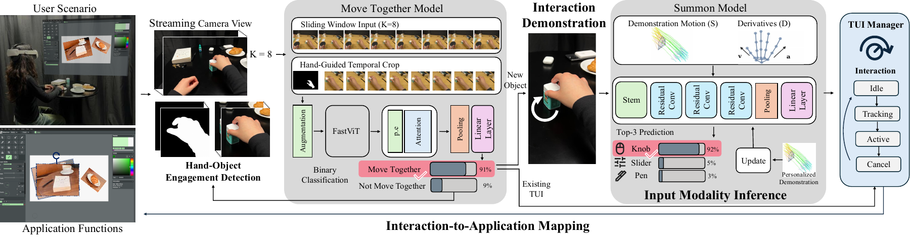
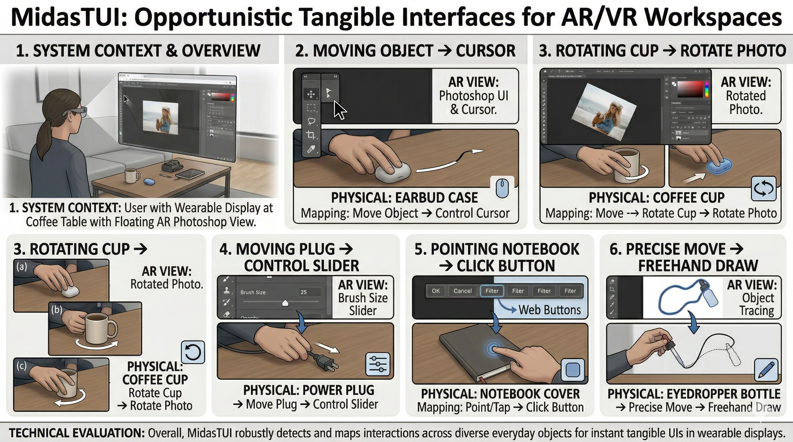

Demonstrate a movement with an everyday object to turn it into a mouse, knob, keypad, or other tangible control.
Abstract
While wearable displays can bring digital workspaces anywhere, interaction remains limited by mid-air gestures that lack tactile feedback and induce fatigue, or controllers that are cumbersome to carry.
We present MidasTUI, a system that instantly transforms arbitrary everyday objects into opportunistic tangible user interfaces through brief interaction demonstrations. For example, a user can slide an earbud case across a table as a mouse, enabling opportunistic interaction without carrying a dedicated input device.
MidasTUI detects when a user is holding and moving an object using the wearable display camera and a Transformer-based temporal classifier. It then infers the intended input modality (e.g., slider, mouse, keypad) from hand movement and maps the tracked hand-object interaction to an application function.
Our evaluations demonstrate reliable cross-object and cross-user generalization. A comparative user study further shows that grounding interaction in everyday objects reduces physical burden and improves perceived usability and control relative to mid-air interaction.
How It Works
Move Together detects when the hand and an object move together using the wearable display camera and a temporal classifier. Summon interprets the demonstrated hand movement to infer the intended control. The resulting input is mapped to a function in the active application.

Everyday Objects, Tangible Controls
A user can slide an earbud case like a mouse, rotate an object like a knob, or tap an object as a keypad. Brief demonstrations let users repurpose available objects for their current workspace.

Highlights
MidasTUI supports opportunistic tangible interaction without carrying dedicated controllers. Technical evaluations examine generalization across objects and users.
The comparative study found reduced physical burden and improved perceived usability and control relative to mid-air input. Mid-air input was generally faster in the evaluated task, illustrating the tradeoff between speed and physical support.

Citation
@misc{ying2026midastui,
author = {Ying, Wen and Chen, Xuweiyi and Cheng, Zezhou and Heo, Seongkook},
title = {MidasTUI: Instant Tangible User Interfaces for Wearable Displays using Everyday Objects},
year = {2026}
}